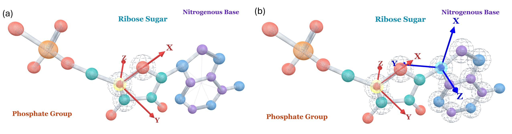
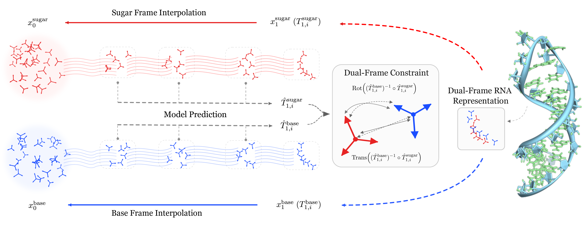

A 120-nt generated backbone (rainbow, N-to-C) overlaid with the RhoFold prediction of its designed sequence (grey). scTM 0.959, scRMSD 1.70 Å.
Overview
DuetRNA is a generative model for de novo RNA backbone design. Each nucleotide carries two coupled rigid frames — a base-anchored frame for inter-residue geometry and a sugar-anchored frame for backbone reconstruction — supervised with a relative-pose loss that keeps the pair chemically coherent. Trained on RNAsolo, DuetRNA improves designability over RNA-FrameFlow on matched protocols, and yields more distinct designable structural modes per generation attempt.
(+7.67 pp, p = 0.008, n = 600)
(YUV 0.065 vs 0.042)
Evaluation protocols
DuetRNA is evaluated under two complementary de novo settings. The inverse-folded (IF) protocol measures backbone designability: gRNAde proposes sequences for each generated backbone, and an independent predictor (RhoFold) tests whether those sequences fold back to it, with a sample counted as valid when scTM ≥ 0.45. The generated-sequence (GS) protocol instead folds the sequence proposed by the model itself, directly measuring sequence-structure compatibility. On the RNA-FrameFlow grid, DuetRNA reaches 48.67% IF validity (vs 41.00% published for RNA-FrameFlow), and on RiboFlow's native grid 44.33% (vs 34.70%); under the matched GS comparison with Boltz-1 it reaches 38.50% (vs RiboGen's 34.17%). Across four independently trained runs, IF validity is 45.68% ± 2.33%, with every run above the 41.00% baseline. Direct atom-level analyses further show improved steric packing and sugar-ring closure over the single-frame ablation.
Why two frames per nucleotide?
RNA is unusually flexible for structure generation: each nucleotide carries 13 heavy atoms, and no single rigid frame can capture both how bases pair and stack and how the phosphate backbone connects. Where a frame is anchored determines what it represents well — a frame anchored at the sugar follows the backbone but drifts on base-pair geometry, while a frame anchored at the base plane tracks base organization instead. We systematically compared candidate anchor placements in a representation analysis covering drift on canonical pairs and full-structure reconstruction, and got the outcome below: two specialized frames per nucleotide, a base-anchored frame carrying inter-residue relations and a sugar-anchored frame carrying backbone reconstruction, each doing what it is best at.

Two ways to anchor a rigid frame on a nucleotide. (a) Sugar-GS, built from (O4$'$, C4$'$, C3$'$). (b) DuetRNA's dual-frame: Sugar-GS together with a Base-Plane frame anchored at the glycosidic nitrogen (N9 for purines, N1 for pyrimidines).
Coupled, not just parallel
DuetRNA predicts both frames jointly and supervises their relative pose with a dedicated loss, keeping the pair chemically coherent. The coupling is what makes it work: removing the base frame drops inverse-folded validity by 14 points, and removing the relative-pose loss drops it by 18.7 points. Reconstructing bases from the base channel and the backbone from the sugar channel keeps errors low on both sides — 1.58 Å base RMSD and 1.88 Å backbone RMSD.

Overview of the DuetRNA pipeline. Each nucleotide carries a base frame and a sugar frame. The model jointly evolves both from noise to a structured state; a dual-frame constraint on the predicted base-to-sugar relative pose keeps the two frames chemically coupled through generation.
Interactive 3D structures
Six unconditionally generated backbones spanning the 40–140 nt range, one interactive window each. All samples are chain-break-free and below the grid-average clash level; each caption lists the length and the best scTM achieved by inverse-folded sequences. Drag to rotate, scroll to zoom — clicking a residue zooms into it, and clicking the background restores the full structure.
40 nt · scTM 0.586
70 nt · scTM 0.712
90 nt · scTM 0.765
110 nt · scTM 0.863
120 nt · scTM 0.974
140 nt · scTM 0.679
Generated samples
Six generated backbones across the 40–150 nt grid.
Denoising trajectory of a 120-nt backbone: 10 s of noise-to-structure denoising followed by a 10 s rotation of the final structure.
Citation
@article{Li2026.08.18.745543,
title = {{Base-and-Sugar Dual-Frame Flow Matching for RNA Co-Design}},
author = {Li, Junzhe and Peng, Lijian and Li, Yuhao and Zhou, Yize
and Cao, Hanqun and Tan, Cheng and Liu, Shengchao},
journal = {bioRxiv},
year = {2026},
doi = {10.1101/2026.08.18.745543},
URL = {https://www.biorxiv.org/content/10.1101/2026.08.18.745543}
}